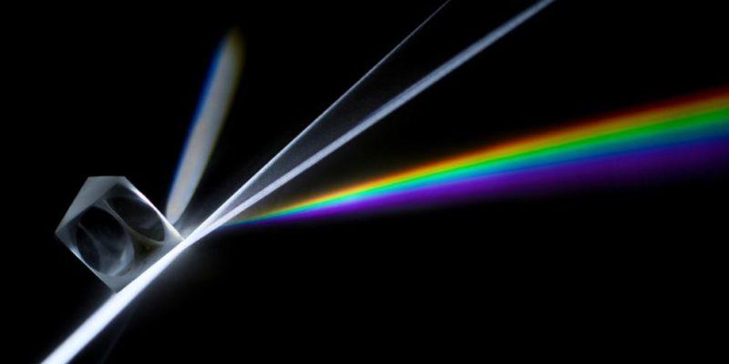
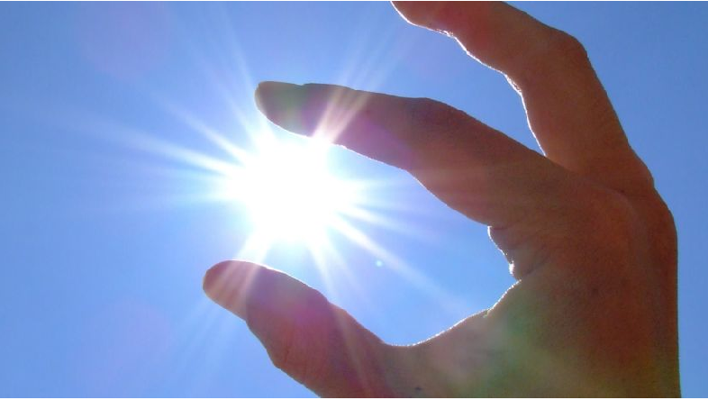
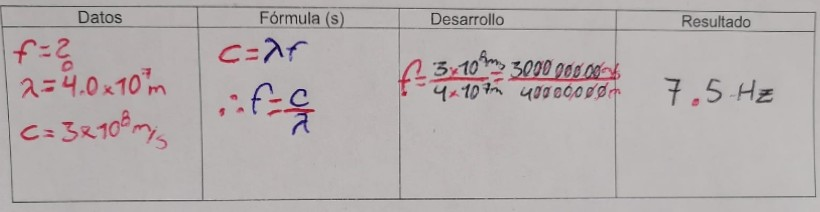
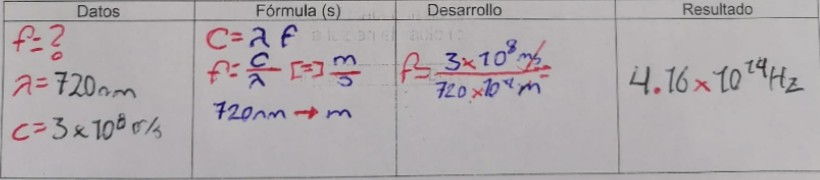

¿Que es obtica?
La luz ha sido definida por la óptica como una franja de emisiones electromagnéticas, cuyo comportamiento es similar al de otras formas invisibles (para nosotros) del espectro electromagnético, como la radiación ultravioleta o infrarroja. Esto significa que su comportamiento puede ser descrito según la mecánica de ondas (excepto en contextos muy específicos en los que la luz actúa como una partícula) y los planteamientos de la electrodinámica clásica de la luz. La óptica es un campo de investigación muy importante y que nutre de herramientas a las demás ciencias, especialmente a la astronomía, la ingeniería, la fotografía y la medicina (oftalmología y optometría). A ella debemos la existencia de espejos, lentes, telescopios, microscopios, láseres y sistemas de fibra óptica.
La Luz
La luz es una de las partes de la radiación electromagnética que puede ser percibida por el ojo del ser humano y otros seres vivos. En física, el término luz se considera como parte del campo de las radiaciones conocido como el espectro electromagnético, mientras que la expresión luz visible señala específicamente la radiación en el espectro visible. Obtica Ondulatoria
la óptica ondulatoria estudia las propiedades ondulatorias de la luz; dado que ella es la propagación de las ondas electromagnéticas. Se utiliza para el estudio de difracción he interferencia.
¿luz Onda o Particula?
En 1690 publicó su teoría sobre la propagación de la luz como un movimiento ondulatorio que necesitaba de un medio material llamado “éter”, para propagarse. Desechaba la posibilidad de que se tratara de un movimiento corpuscular ya que dos haces de luz podían cruzarse sin estorbarse.Su mayor error fue considerar la ondas de luz longitudinales, como las del sonido que se propaga en un medio aun no descubierto que llamó “éter”. Consideraba el “éter “ como un fluido impalpable que todo lo llena incluso donde parece no haber nada, el vacío, luego no existe el vacío ya que está lleno del “éter”. Considera la luz como ondas esféricas y concéntricas con centro en el punto donde se origina la perturbación (foco luminoso). La discusión entre el modelo corpuscular de Newton y el ondulatorio de Huygens fue ganada por Newton en un primer momento debido a su mayor prestigio y fama como científico y a que los experimentos que se conocían en aquella época apoyaban a Newton.
Vuelve a tomarse en consideración la teoría ondulatoria de la luz en el siglo XIX gracias a los trabajos de difracción e interferencias con rayos luminosos de Young. Se observa que los rayos luminosos cumplen el principio de superposición de manera que cuando dos rayos de diferentes orígenes coinciden en la misma dirección su efecto es una combinación (superposición) de ambos y una vez traspasado el lugar de la superposición siguen con su forma original, comportamiento claramente ondulatorio.
Fuente Luminosa cuerpo Iluminado
Cuerpo iluminado
Cuerpos iluminados son aquellos que reciben luz de fuentes lumínicas (cuerpos luminosos)para ser visibles (mesa, silla, birome).
Cuando la luz llega a un cuerpo o material, puede atravesarlo o no. Según este criterio, los
cuerpos se clasifican en:
a.- Cuerpos transparentes.
Hay cuerpos que dejan pasar la luz a través de ellos. Cuando se mira a través de un cuerpo transparente, por ejemplo,
una lámina de vidrio, se puede ver todo lo que hay del otro lado de él.

b.- Cuerpos traslúcidos.
Hay cuerpos que solo dejan pasar parte de la luz que les
llega y no permiten que se vea nítidamente a través de ellos. Estos cuerpos, como ciertos
tipos de vidrios y plásticos, se llaman traslúcidos.
c.- Cuerpos opacos.
Los cuerpos que no dejan pasar la luz, ni nos permiten ver a
través de ellos, se denominan opacos. La madera y el hierro son opacos.
Cuerpo luminoso
Se denomina cuerpo luminoso a todo objeto natural o no natural que emita su propia luz, siendo esta la parte del espectro electromagnético visible por los ojos humanos. Los objetos luminosos son fuentes primarias de luz ya que la emiten, mientras los objetos no luminosos son fuentes secundarias de luz porque reflejan la producida por los primeros.Objetos luminosos
Existen objetos en la naturaleza capaces de emitir luz:
– El sol.
– Las estrellas.
– Los insectos luminiscentes, como luciérnagas y otros.
– Los rayos.
– Las auroras boreales o luces del norte.
Los siguientes son objetos luminosos hechos por el hombre:
– Lámparas o bombillas incandescentes.
– La llama de una vela.
– Lámparas fluorescentes.
– Luces LED.
– La pantalla de un teléfono móvil.
Velocidad de la Luz
La velocidad de la luz en el vacío es una constante universal con el valor de 299 792 458 m/s,aunque suele aproximarse a 3·10⁸ m/s. Se simboliza con la letra c, proveniente del latín celéritās.
Problemas
1. Determina la frecuencia de la luz violeta que tiene una longitud de onda de 4.0 x 107 m. Considera la velocidad de la luz en el vacío (c) de 3 x 108 m/s

2. ¿Cuál es la frecuencia de una onda luminosa que viaja en el vacío y cuya longitud de onda es de 720 nm?
